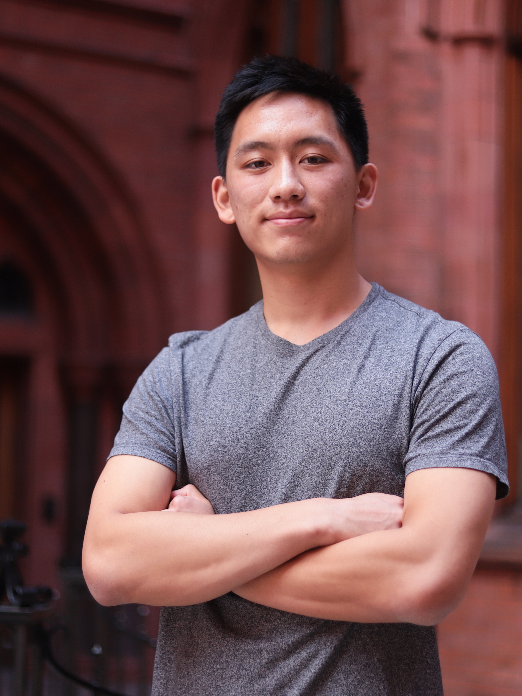

ALEX WEI
 Johns Hopkins CS Master's Student Focused on Software Engineering and Machine Learning.About
I'm currently a graduate student at Johns Hopkins pursuing a Master's in Science and Engineering in Computer Science. I've previously interned as a software engineer at CTVC, Meta (Facebook), JHU APL, and Trayt.Health.My interest in Computer Science started from playing video games. Since then, I've developed a particular focus on software engineering and machine learning.
I'm driven by social good challenges, especially climate change.
Feel free to reach out if you'd like to collaborate, or are seeking academic/career advice.
Last update: September 23, 2023